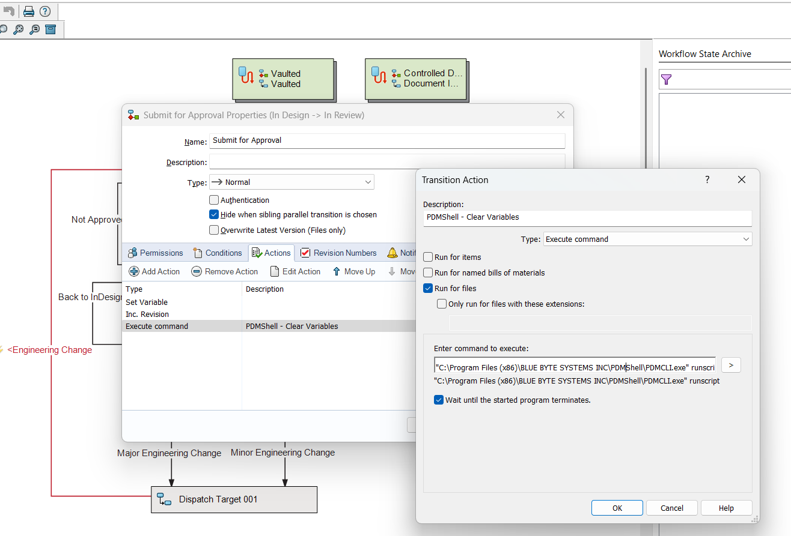

Run PDMShell Scripts from Workflow Transitions
SOLIDWORKS PDM workflow transitions can run external commands. You can use this to start pdmcli.exe and run a .pdmshell script when a file moves through a workflow transition.
DID YOU KNOW?
The PDMShell add-in can run PDMShell scripts directly from PDM command menus and event trigger points. For many workflow automations, the add-in is easier than creating a workflow task or external command because it includes permissions, conditions, placeholders, trigger points, headless execution, and the visual script editor.
Workflow Transition Settings

- Action Type: Set the action type to Execute Command.
- Command: Specify the full path to
pdmcli.exe. - Arguments: Use
runscript -sourceand pass the selected file with-filePath. - Wait: Enable Wait until the started program terminates.
Command:
C:\Program Files (x86)\BLUE BYTE SYSTEMS INC\PDMShell\PDMCLI.exe
Arguments:
runscript -source "C:\Scripts\clearvariables.pdmshell" -filePath "%PathToSelectedFile%"
- Wrap the script path in quotes if it contains spaces.
- Use
-filePath "%PathToSelectedFile%"when the transition runs against the selected PDM file. - Inside the script, use PDMShell placeholders such as
$localPath,$fileName,$fileNameWithoutExtension,$extension,$folderPath, and PDM variable placeholders.
Example: Workflow Transition Configuration
Command: C:\Program Files (x86)\BLUE BYTE SYSTEMS INC\PDMShell\PDMCLI.exe
Arguments: runscript -source "C:\Scripts\clearvariables.pdmshell" -filePath "%PathToSelectedFile%"
Example script:
In the PDMShell script (clearvariables.pdmshell), reference the selected file with $localPath:
# Check the selected file out.
checkout -filePath "$localPath"
# Clear the Description variable.
setvar -filePath "$localPath" -variableName Description -value ""
# Save changes.
checkin -filePath "$localPath" -comment "Cleared description from workflow transition"
# Optional: save a log.
cd -directory "\"
cd -directory "logs"
dump -filePath "clearvariables_$yyyy-$mm-$dd_$guid.txt"
# Required when running from a workflow transition or another external automation host.
quit
Passing Extra Transition Values
Warning
Positional values such as $parameter1$ and $parameter2$ are legacy behavior and should not be used with PDMShell 4.0.6 or later. Starting with PDMShell 4.0.6, runscript should receive context through -filePath, -items, or -search, and scripts should use PDMShell placeholders such as $localPath instead.
Older scripts may use this positional format:
runscript "C:\Scripts\clearvariables.pdmshell" "%PathToSelectedFile%"
In that legacy format, the script used $parameter1$:
checkout -filePath "$parameter1$"
setvar -filePath "$parameter1$" -variableName Description -value ""
checkin -filePath "$parameter1$" -comment "Cleared description"
quit
For current PDMShell versions, use the -source and -filePath format shown above. If the workflow transition needs richer context, conditions, or user/group permissions, use the PDMShell add-in instead of a transition Execute Command action.
Tutorial
Tips
- Test scripts in PDMShell before attaching them to a workflow transition.
- Use
quitat the end of scripts launched from workflow transitions so the external PDMShell process closes after the script runs. - Prefer the PDMShell add-in for automations that need conditions, permissions, right-click menu commands, or event trigger points.